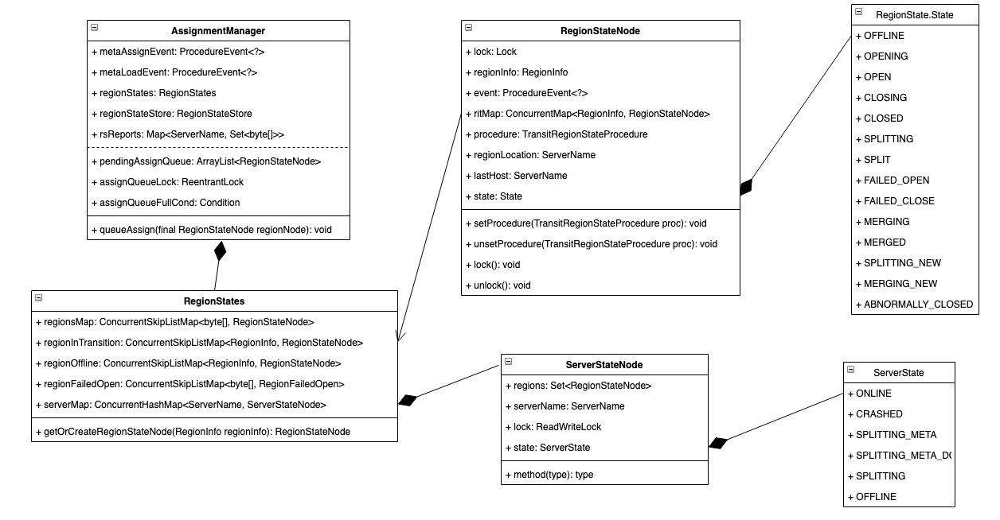
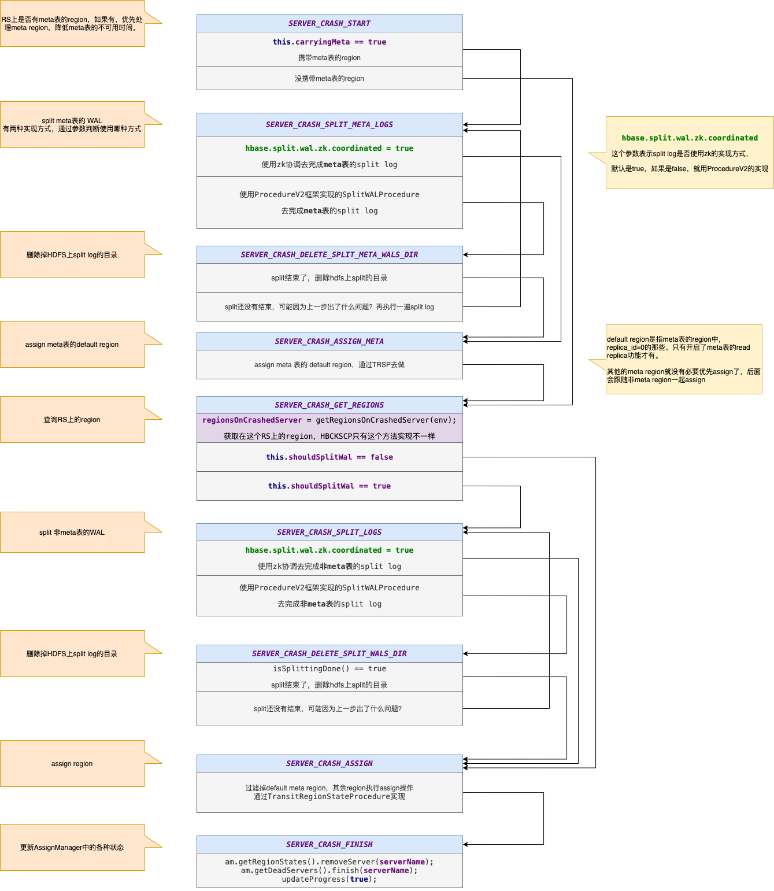
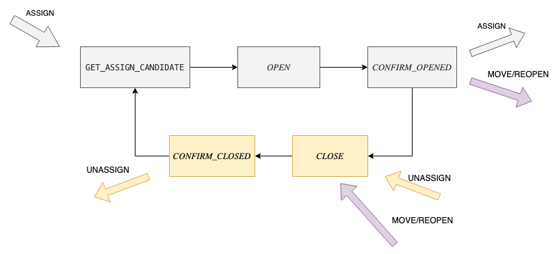
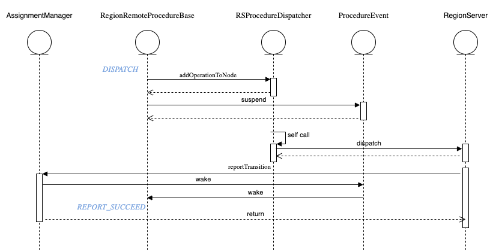

<!DOCTYPE html>
<html lang="zh-CN">
<head>
  <meta charset="UTF-8">
<meta name="viewport" content="width=device-width, initial-scale=1, maximum-scale=2">
<meta name="theme-color" content="#222">
<meta name="generator" content="Hexo 4.2.0">
  <link rel="apple-touch-icon" sizes="180x180" href="/blog/images/apple-touch-icon-next.png">
  <link rel="icon" type="image/png" sizes="32x32" href="/blog/images/favicon-32x32-next.png">
  <link rel="icon" type="image/png" sizes="16x16" href="/blog/images/favicon-16x16-next.png">
  <link rel="mask-icon" href="/blog/images/logo.svg" color="#222">

<link rel="stylesheet" href="/blog/css/main.css">


<link rel="stylesheet" href="/blog/lib/font-awesome/css/font-awesome.min.css">


<script id="hexo-configurations">
  var NexT = window.NexT || {};
  var CONFIG = {
    hostname: new URL('https://ddupg.github.io/blog').hostname,
    root: '/blog/',
    scheme: 'Gemini',
    version: '7.7.0',
    exturl: false,
    sidebar: {"position":"right","display":"post","padding":18,"offset":12,"onmobile":false},
    copycode: {"enable":true,"show_result":true,"style":null},
    back2top: {"enable":true,"sidebar":false,"scrollpercent":false},
    bookmark: {"enable":false,"color":"#222","save":"auto"},
    fancybox: false,
    mediumzoom: false,
    lazyload: false,
    pangu: false,
    comments: {"style":"tabs","active":"gitalk","storage":true,"lazyload":true,"nav":null,"activeClass":"gitalk"},
    algolia: {
      appID: '',
      apiKey: '',
      indexName: '',
      hits: {"per_page":10},
      labels: {"input_placeholder":"Search for Posts","hits_empty":"We didn't find any results for the search: ${query}","hits_stats":"${hits} results found in ${time} ms"}
    },
    localsearch: {"enable":true,"trigger":"auto","top_n_per_article":1,"unescape":false,"preload":false},
    path: 'search.xml',
    motion: {"enable":true,"async":false,"transition":{"post_block":"fadeIn","post_header":"slideDownIn","post_body":"slideDownIn","coll_header":"slideLeftIn","sidebar":"slideUpIn"}}
  };
</script>

  <meta name="description" content="最近在组内进行的一次SCP和TRSP两个Procedure执行过程的分享，在这里记录一下，懒得去整理出文章了 😄">
<meta property="og:type" content="article">
<meta property="og:title" content="HBase: SCP &amp; TRSP">
<meta property="og:url" content="https://ddupg.github.io/blog/2020/04/15/SCP&TRSP/index.html">
<meta property="og:site_name" content="Ddupg">
<meta property="og:description" content="最近在组内进行的一次SCP和TRSP两个Procedure执行过程的分享，在这里记录一下，懒得去整理出文章了 😄">
<meta property="og:locale" content="zh_CN">
<meta property="og:image" content="https://ddupg.github.io/blog/2020/04/15/SCP&TRSP/amv2.png">
<meta property="og:image" content="https://ddupg.github.io/blog/2020/04/15/SCP&TRSP/ProcedureEvent.png">
<meta property="og:image" content="https://ddupg.github.io/blog/2020/04/15/SCP&TRSP/SCP.png">
<meta property="og:image" content="https://ddupg.github.io/blog/2020/04/15/SCP&TRSP/TRSP-simple.png">
<meta property="og:image" content="https://ddupg.github.io/blog/2020/04/15/SCP&TRSP/TRSP.png">
<meta property="og:image" content="https://ddupg.github.io/blog/2020/04/15/SCP&TRSP/RegionRemoteProcedureBase.png">
<meta property="article:published_time" content="2020-04-15T10:39:31.479Z">
<meta property="article:modified_time" content="2020-04-17T09:14:44.634Z">
<meta property="article:author" content="Ddupg">
<meta property="article:tag" content="HBase">
<meta name="twitter:card" content="summary">
<meta name="twitter:image" content="https://ddupg.github.io/blog/2020/04/15/SCP&TRSP/amv2.png">

<link rel="canonical" href="https://ddupg.github.io/blog/2020/04/15/SCP&TRSP/">


<script id="page-configurations">
  // https://hexo.io/docs/variables.html
  CONFIG.page = {
    sidebar: "",
    isHome: false,
    isPost: true
  };
</script>

  <title>HBase: SCP & TRSP | Ddupg</title>
  


  <script>
    var _hmt = _hmt || [];
    (function() {
      var hm = document.createElement("script");
      hm.src = "https://hm.baidu.com/hm.js?b405aa1e8b18fcd03ab89c45a8ade0ef";
      var s = document.getElementsByTagName("script")[0];
      s.parentNode.insertBefore(hm, s);
    })();
  </script>


  <noscript>
  <style>
  .use-motion .brand,
  .use-motion .menu-item,
  .sidebar-inner,
  .use-motion .post-block,
  .use-motion .pagination,
  .use-motion .comments,
  .use-motion .post-header,
  .use-motion .post-body,
  .use-motion .collection-header { opacity: initial; }

  .use-motion .site-title,
  .use-motion .site-subtitle {
    opacity: initial;
    top: initial;
  }

  .use-motion .logo-line-before i { left: initial; }
  .use-motion .logo-line-after i { right: initial; }
  </style>
</noscript>

</head>

<body itemscope itemtype="http://schema.org/WebPage">
  <div class="container use-motion">
    <div class="headband"></div>

    <header class="header" itemscope itemtype="http://schema.org/WPHeader">
      <div class="header-inner"><div class="site-brand-container">
  <div class="site-meta">

    <div>
      <a href="/blog/" class="brand" rel="start">
        <span class="logo-line-before"><i></i></span>
        <span class="site-title">Ddupg</span>
        <span class="logo-line-after"><i></i></span>
      </a>
    </div>
  </div>

  <div class="site-nav-toggle">
    <div class="toggle" aria-label="切换导航栏">
      <span class="toggle-line toggle-line-first"></span>
      <span class="toggle-line toggle-line-middle"></span>
      <span class="toggle-line toggle-line-last"></span>
    </div>
  </div>
</div>


<nav class="site-nav">
  
  <ul id="menu" class="menu">
        <li class="menu-item menu-item-home">

    <a href="/blog/" rel="section"><i class="fa fa-fw fa-home"></i>首页</a>

  </li>
        <li class="menu-item menu-item-archives">

    <a href="/blog/archives/" rel="section"><i class="fa fa-fw fa-archive"></i>归档<span class="badge">9</span></a>

  </li>
        <li class="menu-item menu-item-english">

    <a href="/blog/categories/English/" rel="section"><i class="fa fa-fw fa-university"></i>English</a>

  </li>
      <li class="menu-item menu-item-search">
        <a role="button" class="popup-trigger"><i class="fa fa-search fa-fw"></i>搜索
        </a>
      </li>
  </ul>

</nav>
  <div class="site-search">
    <div class="popup search-popup">
    <div class="search-header">
  <span class="search-icon">
    <i class="fa fa-search"></i>
  </span>
  <div class="search-input-container">
    <input autocomplete="off" autocorrect="off" autocapitalize="none"
           placeholder="搜索..." spellcheck="false"
           type="text" id="search-input">
  </div>
  <span class="popup-btn-close">
    <i class="fa fa-times-circle"></i>
  </span>
</div>
<div id="search-result"></div>

</div>
<div class="search-pop-overlay"></div>

  </div>
</div>
    </header>

    
  <div class="back-to-top">
    <i class="fa fa-arrow-up"></i>
    <span>0%</span>
  </div>

  <a href="https://github.com/ddupg" class="github-corner" title="Follow me on GitHub" aria-label="Follow me on GitHub" rel="noopener" target="_blank"><svg width="80" height="80" viewBox="0 0 250 250" aria-hidden="true"><path d="M0,0 L115,115 L130,115 L142,142 L250,250 L250,0 Z"></path><path d="M128.3,109.0 C113.8,99.7 119.0,89.6 119.0,89.6 C122.0,82.7 120.5,78.6 120.5,78.6 C119.2,72.0 123.4,76.3 123.4,76.3 C127.3,80.9 125.5,87.3 125.5,87.3 C122.9,97.6 130.6,101.9 134.4,103.2" fill="currentColor" style="transform-origin: 130px 106px;" class="octo-arm"></path><path d="M115.0,115.0 C114.9,115.1 118.7,116.5 119.8,115.4 L133.7,101.6 C136.9,99.2 139.9,98.4 142.2,98.6 C133.8,88.0 127.5,74.4 143.8,58.0 C148.5,53.4 154.0,51.2 159.7,51.0 C160.3,49.4 163.2,43.6 171.4,40.1 C171.4,40.1 176.1,42.5 178.8,56.2 C183.1,58.6 187.2,61.8 190.9,65.4 C194.5,69.0 197.7,73.2 200.1,77.6 C213.8,80.2 216.3,84.9 216.3,84.9 C212.7,93.1 206.9,96.0 205.4,96.6 C205.1,102.4 203.0,107.8 198.3,112.5 C181.9,128.9 168.3,122.5 157.7,114.1 C157.9,116.9 156.7,120.9 152.7,124.9 L141.0,136.5 C139.8,137.7 141.6,141.9 141.8,141.8 Z" fill="currentColor" class="octo-body"></path></svg></a>


    <main class="main">
      <div class="main-inner">
        <div class="content-wrap">
          

          <div class="content">
            

  <div class="posts-expand">
      
  
  
  <article itemscope itemtype="http://schema.org/Article" class="post-block " lang="zh-CN">
    <link itemprop="mainEntityOfPage" href="https://ddupg.github.io/blog/2020/04/15/SCP&TRSP/">

    <span hidden itemprop="author" itemscope itemtype="http://schema.org/Person">
      <meta itemprop="image" content="/blog/images/avatar.gif">
      <meta itemprop="name" content="Ddupg">
      <meta itemprop="description" content="">
    </span>

    <span hidden itemprop="publisher" itemscope itemtype="http://schema.org/Organization">
      <meta itemprop="name" content="Ddupg">
    </span>
      <header class="post-header">
        <h1 class="post-title" itemprop="name headline">
          HBase: SCP & TRSP
        </h1>

        <div class="post-meta">
            <span class="post-meta-item">
              <span class="post-meta-item-icon">
                <i class="fa fa-calendar-o"></i>
              </span>
              <span class="post-meta-item-text">发表于</span>

              <time title="创建时间：2020-04-15 18:39:31" itemprop="dateCreated datePublished" datetime="2020-04-15T18:39:31+08:00">2020-04-15</time>
            </span>
            <span class="post-meta-item">
              <span class="post-meta-item-icon">
                <i class="fa fa-folder-o"></i>
              </span>
              <span class="post-meta-item-text">分类于</span>
                <span itemprop="about" itemscope itemtype="http://schema.org/Thing">
                  <a href="/blog/categories/HBase/" itemprop="url" rel="index">
                    <span itemprop="name">HBase</span>
                  </a>
                </span>
            </span>

          
            <span class="post-meta-item" title="阅读次数" id="busuanzi_container_page_pv" style="display: none;">
              <span class="post-meta-item-icon">
                <i class="fa fa-eye"></i>
              </span>
              <span class="post-meta-item-text">阅读次数：</span>
              <span id="busuanzi_value_page_pv"></span>
            </span>

        </div>
      </header>

    
    
    
    <div class="post-body" itemprop="articleBody">

      
        <p>最近在组内进行的一次SCP和TRSP两个Procedure执行过程的分享，在这里记录一下，懒得去整理出文章了 😄</p>
<a id="more"></a>
<h2 id="AMv2">AMv2</h2>
<h3 id="比较重要的类">比较重要的类</h3>
<p></p>
<h4 id="AssignmentManager">AssignmentManager</h4>
<p>管理Region的assign/unassign操作，管理Region的状态信息。</p>
<p>其中主要属性：</p>
<ul>
<li>RegionStates: 管理内存中的Region状态信息，RS上有哪些region</li>
<li>RegionStateStore: 操作meta表</li>
</ul>
<h4 id="RegionStateNode">RegionStateNode</h4>
<ul>
<li>lock: 对Region状态信息和RegionLoacation信息加锁，防止并发修改。</li>
<li>regionInfo: Region信息</li>
<li>event: 用于多个procedure等待Region的某个状态变化，比如open、close。</li>
<li>procedure: 记录唯一绑定的TRSP，保证每个Region只能同时进行一个TRSP。</li>
<li>regionLocation: region要被assign到哪个RS。</li>
</ul>
<h4 id="ProcedureEvent">ProcedureEvent</h4>
<p>用于多个Procedure等待某个依赖的事件，在AMv2中，主要的就是等待Region的状态变化。</p>
<p></p>
<p>事件状态就两种：</p>
<ul>
<li>ready: 某个事件已准备好，可以继续执行</li>
<li>suspend: 事件未准备好，之后调用suspendIfNotReady()方法的Procedure都会被加到 suspendedProcedure队列里，用于之后唤醒。</li>
</ul>
<p>主要方法：</p>
<ul>
<li>suspendIfNotReady: 如果是ready状态，表示可以继续执行；如果suspend状态，Procedure会被加到 suspendedProcedure队列里，用于之后唤醒。这时候Procedure会抛出ProcedureSuspendedException，Pv2框架会暂停Procedure的执行，等待被唤醒。</li>
</ul>
<p>这个功能有个问题就是只保存在内存中，无法恢复，如果Procedure使用不好，Master重启，等待队列无法恢复，Procedure可能永远无法被唤醒。</p>
<h2 id="ServerCrashProcedure">ServerCrashProcedure</h2>
<h3 id="触发条件">触发条件</h3>
<h4 id="zk-session-expire（被动触发）">zk session expire（被动触发）</h4>
<p>监听zk上rs节点的变化，如果代表某个rs的子节点被过期删除，就触发SCP。</p>
<p>配置: {zookeeper.znode.parent}/{<a href="http://zookeeper.znode.rs" target="_blank" rel="noopener">zookeeper.znode.rs</a>}/</p>
<p>默认: /hbase/{cluster name}/rs/</p>
<p>此种情况下，如果rs处于非ONLINE状态，不会强制执行ServerCrashProcedure</p>
<h4 id="HBCK2-（主动触发）">HBCK2 （主动触发）</h4>
<p>要使用完整的ServerName，包含后面的startcode。</p>
<figure class="highlight plain"><table><tr><td class="gutter"><pre><span class="line">1</span><br></pre></td><td class="code"><pre><span class="line">.&#x2F;hbase hbck -j hbase-hbck2-1.0.0-SNAPSHOT.jar scheduleRecoveries c4-hadoop-tst-st84.bj,55600,1586416554312 c4-hadoop-tst-st85.bj,55600,1586415546993</span><br></pre></td></tr></table></figure>
<p>无论rs是否处于ONLINE状态，都会强制执行 HBCKServerCrashProcedure（ServerCrashProcedure的子类），大多数情况下行为和ServerCrashProcedure一样，不同的地方在于getRegionsOnCrashedServer方法：</p>
<p>如果ServerCrashProcedure.getRegionsOnCrashedServer返回空集合，HBCKServerCarshProcedure会scan读meta表，将meta表上记录的Opening和Opened两种状态的region返回，另外将Closing状态的region改为Close。</p>
<h3 id="状态变化">状态变化</h3>
<p><strong>准备工作</strong></p>
<p>将当前处理的rs加到 DeadServer processing list。在SCP执行结束之后，才加到 DeadServers list。每个状态都会检查下，是否加进去了。</p>
<p><strong>等待meta表可用</strong></p>
<figure class="highlight plain"><table><tr><td class="gutter"><pre><span class="line">1</span><br><span class="line">2</span><br><span class="line">3</span><br><span class="line">4</span><br><span class="line">5</span><br><span class="line">6</span><br><span class="line">7</span><br><span class="line">8</span><br><span class="line">9</span><br><span class="line">10</span><br></pre></td><td class="code"><pre><span class="line">case SERVER_CRASH_START:</span><br><span class="line">case SERVER_CRASH_SPLIT_META_LOGS:</span><br><span class="line">case SERVER_CRASH_DELETE_SPLIT_META_WALS_DIR:</span><br><span class="line">case SERVER_CRASH_ASSIGN_META:</span><br><span class="line">break;</span><br><span class="line">default:</span><br><span class="line">&#x2F;&#x2F; If hbase:meta is not assigned, yield.</span><br><span class="line">if (env.getAssignmentManager().waitMetaLoaded(this)) &#123;</span><br><span class="line">    throw new ProcedureSuspendedException();</span><br><span class="line">&#125;</span><br></pre></td></tr></table></figure>
<p>前面几个状态都是操作meta表的region的状态，所以meta表不可用也会执行，其他的状态会操作普通region，涉及到meta表的读写，所以其他状态都要求meta表的region可用，才可以继续执行。这里就利用了ProcedureEvent这个类的功能，等待meta region加载完成之后才允许继续下面的状态，否则直接抛出ProcedureSuspendedException暂停当前Procedure的执行，等待被唤醒。</p>
<p><strong>但这里好像使用AssignmentManager.metaAssignEvent更合适</strong>。因为meatLoadedEvent只有在Master启动之后才会触发一次，metaAssignEvent在Master启动和每次meta region open都会触发，所以metaAssignEvent来代表meta region可用更合适一些。</p>
<p></p>
<ul>
<li>START: 没有什么实际操作，根据RS上是否有meta表的region，来判断下一步的状态</li>
<li>SPLIT_META_LOGS: split meta表的WAL</li>
<li>DELETE_SPLIT_META_WALS_DIR: 删除HDFS上meta表split log的目录</li>
<li>ASSIGN_META: 重新assign meta region</li>
<li>GET_REGIONS: 查询RS上除meta外的region</li>
<li>SPLIT_LOGS: split非meta表的WAL</li>
<li>DELETE_SPLIT_WALS_DIR: 删除HDFS上非meta表的WAL目录</li>
<li>ASSIGN: assign 非meta的region</li>
<li>FINISH: 收尾工作，将RS加到 DeadServers list，触发CP</li>
</ul>
<p>其实这些状态主要可以做的就是Split WAL，Delete WAL dir，Assign region这三类，只不过将Region按是否是meta做了区分，meta region和普通region分别做了这三类操作。这里我理解原因应该是普通的region assign需要读写meta表，所以要求meta表的region必须可用才行，所以优先对meta region进行三步操作处理，meta region可用之后才会进行普通region的三步操作。</p>
<h3 id="问题">问题</h3>
<p><strong>执行SCP的时候，RS上的region是怎么处理的？</strong></p>
<p>直接置为ABNORMALLY_CLOSED，认为所有的region都已经不可用了。</p>
<p>如果region有TRSP在进行，就进一步通知所有这些region的TRSP和RRP，做对应的操作。<br>
如果没有，就新加TRSP去assign这些region。</p>
<p>如果rs再恢复或启动的话，也应该会发现zk的节点丢了，不能直接open它的region。（这个没有去看代码确认）</p>
<h2 id="TransitRegionStateProcedure">TransitRegionStateProcedure</h2>
<h3 id="主要变量">主要变量</h3>
<p><strong>type/initialState/lastState</strong></p>
<table>
<thead>
<tr>
<th>type</th>
<th>initialState</th>
<th>lastState</th>
</tr>
</thead>
<tbody>
<tr>
<td>ASSIGN</td>
<td>GET_ASSIGN_CANDIDATE</td>
<td>CONFIRM_OPENED</td>
</tr>
<tr>
<td>UNASSIGN</td>
<td>CLOSE</td>
<td>CONFIRM_CLOSED</td>
</tr>
<tr>
<td>MOVE</td>
<td>CLOSE</td>
<td>CONFIRM_OPENED</td>
</tr>
<tr>
<td>REOPEN</td>
<td>CLOSE</td>
<td>CONFIRM_OPENED</td>
</tr>
</tbody>
</table>
<p><strong>remoteProc</strong></p>
<p>绑定的某个RegionRemoteProcedureBase，用于执行open/close region这样的RPC操作，这里也只能有一个remoteProc，表示不能同时进行多个操作region状态的RPC。</p>
<h3 id="状态流转">状态流转</h3>
<p></p>
<p>可以看出来，TRSP中的5个状态形成一个环，通过initialState和lastState两个状态判断入环和出环的状态。</p>
<p>像ASSIGN和UNASSIGN两个操作，只需要跑完自己的状态就行了。MOVE/REOPEN操作则要先close然后open，不同的是，通过指定RegionStateNode.regionLocation来指定open在哪个RS上，open的rs变化了就是MOVE，不变就是REOPEN。</p>
<p>ASSIGN: GET_ASSIGN_CANDIDATE -&gt; OPEN -&gt; CONFIRM_OPENED<br>
UNASSIGN: CLOSE -&gt; CONFIRM_CLOSED<br>
MOVE/REOPEN: CLOSE -&gt; CONFIRM_CLOSE -&gt; GET_ASSIGN_CANDIDATE -&gt; OPEN -&gt; CONFIRM_OPENED</p>
<p>简图中一些异常情况下的状态流转没有展示出来，比如如果close失败，会再将region open，然后再close，就会在环上转圈。就是说执行过程中出现问题，就会在环上循环执行，直到满足条件达到lastState最终出环。</p>
<p></p>
<p><strong>准备工作</strong></p>
<p>执行之前必须获取RegionStateNode的锁，因为执行过程中，会多次对其中的数据（state、regionLocation）做修改，前面讲过，为保证RegionStateNode的属性不会并发修改，所有修改之前都要先拿锁。</p>
<p><strong>GET_ASSIGN_CANDIDATE</strong></p>
<p>主要做的事情就是为Region指定一个RS，将Region放入AM的pendingAssignQueue之后，直接suspend等待。AM以生产者消费者模式为Region指定RS，然后唤醒Procedure。</p>
<p><strong>OPEN</strong></p>
<ol>
<li>如果没有指定regionLocation，则有可能是上一步GET_ASSIGN_CANDIDATE出现问题。或者上一步执行过程中，Master重启，Procedure重试执行了。这时候重新执行上一步就好了。</li>
<li>如果成功制定了regionLocation，就通过OpenRegionProcedure去通知RS open该region。
<ol>
<li>如果OpenRegionProcedure最终成功执行完了，TRSP继续执行</li>
<li>如果失败了，会在下一步CONFIRM_OPENED进行重试</li>
<li>如果Master重启，导致无法唤醒，OpenRegionProcedure有超时机制，超时之后会再重试。</li>
</ol>
</li>
</ol>
<p><strong>CONFIRM_OPENED</strong></p>
<p>检查OPEN操作最终是否成功。</p>
<ol>
<li>如果Region成功OPEN
<ol>
<li>要看lastState是否就是CONFIRM_OPENED，是的话就完事了。</li>
<li>不是的话要再执行CLOSE操作。就像简图中的环上一样执行。有可能出现的一种情况是，当merge/split region的时候，要unassign一个region，但过程中RS crash了，就得先把这个region open了，再执行unassign操作，防止RS crash时数据丢失无法恢复。</li>
</ol>
</li>
<li>重试次数达到上限，直接结束</li>
<li>抹掉regionLocation，重新执行GET_ASSIGN_CANDIDATE</li>
</ol>
<p><strong>CLOSE</strong></p>
<ol>
<li>region当前的状态合理，通过CloseRegionProcedure，执行过程类似于OpenRegionProcedure。</li>
<li>不合理直接再去GET_ASSIGN_CANDIDATE走OPEN的逻辑</li>
</ol>
<p><strong>CONFIRM_CLOSED</strong></p>
<ol>
<li>如果Region当前状态是CLOSE，说明上一步执行成功了
<ol>
<li>如果lastState == CONFIRM_CLOSED，说明当前状态就是要求的最终状态，可以结束了。</li>
<li>否则，说明可能是move或者reopen操作，需要再assign region，去GET_ASSIGN_CANDIDATE走OPEN的逻辑。<strong>只有这一个地方回到GET_ASSIGN_CANDIDATE没有抹掉regionLocation</strong>。</li>
</ol>
</li>
<li>如果Region当前状态是CLOSING，说明close rpc执行失败了，rs没有回调通知（eg. rs重启了），一直等到了CloseRegionProcedure超时触发了TRSP继续执行，才走到了当前状态，需要再重新Close一次。</li>
<li>走到这里的Region可能是ABNORMALLY_CLOSED状态，应该只有RS crash才会导致这个状态。
<ol>
<li>如果非default region，ABNORMALLY_CLOSED可以被当作CLOSE处理，直接结束掉。只有开启了read region replicas功能才有这样的region。非default region不接收写操作，所以即使非正常close也不会造成数据丢失。</li>
<li>Region close异常，需要再open之后再正常close，保证数据不会丢失。原因和CONFIRM_OPENED里的逻辑类似，比如merge/split region的时候，要先close region，如果失败了，则必须先恢复region再重新close，避免数据丢失。</li>
</ol>
</li>
</ol>
<h3 id="问题-v2">问题</h3>
<p><strong>region merge/split是怎么处理的？</strong></p>
<p>region merge/split分别是由MergeTableRegionsProcedure和SplitTableRegionProcedure来执行的，它们步步骤都可以拆分成region assign/unassign，也就会拆成不同的TRSP去执行。</p>
<p>以 region split为例</p>
<ol>
<li>close父region（unassign）</li>
<li>处理好子region的信息保存之后</li>
<li>open子region（assign）</li>
</ol>
<h3 id="RegionRemoteProcedureBase">RegionRemoteProcedureBase</h3>
<p>RegionRemoteProcedureBase是OpenRegionProcedure和CloseRegionProcedure的父类，实现了基本的RPC相关功能。RegionRemoteProcedureBase与TRSP的配合主要也是利用了ProcedureEvent机制。</p>
<p></p>
<ol>
<li>addOperationToNode方法就是将RPC操作封装起来，放到一个集合中等待执行。</li>
<li>执行当前Region的ProcedureEvent.suspend操作，等待RPC执行完毕之后唤醒。</li>
<li>RSProcedureDispatcher会分批将RPC操作按RS和操作类型分类，批量请求某个RS。</li>
<li>RS执行完对应操作之后，通过reportTransition通知AM（当然中间还有Master），Region open/close完成。</li>
<li>然后AM就会唤醒RegionStateNode.event，继续执行RegionRemoteProcedureBase</li>
<li>RegionRemoteProcedureBase执行完成之后，继续执行TRSP后续步骤。</li>
</ol>
<h4 id="问题-v3">问题</h4>
<p><strong>RPC回调之后，怎么确定对应的哪个Procedure？</strong></p>
<p>RegionInfo -&gt; AM.regionStates (类型 RegionStates) -&gt; RegionStates.regionMap (类型 Map&lt;byte[], RegionStateNode&gt;) -&gt; RegionStateNode.procedure (类型 TRSP) -&gt; TRSP.remoteProc (类型 RegionRemoteProcedureBase) -&gt; RegionRemoteProcedureBase.reportTransition</p>
<p><strong>RS重启导致没有RPC回调，或者Master重启之后event队列丢失 怎么办？</strong></p>
<p>RegionRemoteProcedureBase有个超时限制，超时之后重新再执行一次。</p>

    </div>

    
    
    

      <footer class="post-footer">
          <div class="post-tags">
              <a href="/blog/tags/HBase/" rel="tag"># HBase</a>
          </div>

        


        
    <div class="post-nav">
      <div class="post-nav-item">
    <a href="/blog/2020/03/23/TED-Listening-to-shame/" rel="prev" title="「TED」Listening to shame">
      <i class="fa fa-chevron-left"></i> 「TED」Listening to shame
    </a></div>
      <div class="post-nav-item"></div>
    </div>
      </footer>
    
  </article>
  
  
  

  </div>


          </div>
          
    <div class="comments" id="gitalk-container"></div>

<script>
  window.addEventListener('tabs:register', () => {
    let activeClass = CONFIG.comments.activeClass;
    if (CONFIG.comments.storage) {
      activeClass = localStorage.getItem('comments_active') || activeClass;
    }
    if (activeClass) {
      let activeTab = document.querySelector(`a[href="#comment-${activeClass}"]`);
      if (activeTab) {
        activeTab.click();
      }
    }
  });
  if (CONFIG.comments.storage) {
    window.addEventListener('tabs:click', event => {
      if (!event.target.matches('.tabs-comment .tab-content .tab-pane')) return;
      let commentClass = event.target.classList[1];
      localStorage.setItem('comments_active', commentClass);
    });
  }
</script>

        </div>
          
  
  <div class="toggle sidebar-toggle">
    <span class="toggle-line toggle-line-first"></span>
    <span class="toggle-line toggle-line-middle"></span>
    <span class="toggle-line toggle-line-last"></span>
  </div>

  <aside class="sidebar">
    <div class="sidebar-inner">

      <ul class="sidebar-nav motion-element">
        <li class="sidebar-nav-toc">
          文章目录
        </li>
        <li class="sidebar-nav-overview">
          站点概览
        </li>
      </ul>

      <!--noindex-->
      <div class="post-toc-wrap sidebar-panel">
          <div class="post-toc motion-element"><ol class="nav"><li class="nav-item nav-level-2"><a class="nav-link" href="#AMv2"><span class="nav-number">1.</span> <span class="nav-text">AMv2</span></a><ol class="nav-child"><li class="nav-item nav-level-3"><a class="nav-link" href="#比较重要的类"><span class="nav-number">1.1.</span> <span class="nav-text">比较重要的类</span></a><ol class="nav-child"><li class="nav-item nav-level-4"><a class="nav-link" href="#AssignmentManager"><span class="nav-number">1.1.1.</span> <span class="nav-text">AssignmentManager</span></a></li><li class="nav-item nav-level-4"><a class="nav-link" href="#RegionStateNode"><span class="nav-number">1.1.2.</span> <span class="nav-text">RegionStateNode</span></a></li><li class="nav-item nav-level-4"><a class="nav-link" href="#ProcedureEvent"><span class="nav-number">1.1.3.</span> <span class="nav-text">ProcedureEvent</span></a></li></ol></li></ol></li><li class="nav-item nav-level-2"><a class="nav-link" href="#ServerCrashProcedure"><span class="nav-number">2.</span> <span class="nav-text">ServerCrashProcedure</span></a><ol class="nav-child"><li class="nav-item nav-level-3"><a class="nav-link" href="#触发条件"><span class="nav-number">2.1.</span> <span class="nav-text">触发条件</span></a><ol class="nav-child"><li class="nav-item nav-level-4"><a class="nav-link" href="#zk-session-expire（被动触发）"><span class="nav-number">2.1.1.</span> <span class="nav-text">zk session expire（被动触发）</span></a></li><li class="nav-item nav-level-4"><a class="nav-link" href="#HBCK2-（主动触发）"><span class="nav-number">2.1.2.</span> <span class="nav-text">HBCK2 （主动触发）</span></a></li></ol></li><li class="nav-item nav-level-3"><a class="nav-link" href="#状态变化"><span class="nav-number">2.2.</span> <span class="nav-text">状态变化</span></a></li><li class="nav-item nav-level-3"><a class="nav-link" href="#问题"><span class="nav-number">2.3.</span> <span class="nav-text">问题</span></a></li></ol></li><li class="nav-item nav-level-2"><a class="nav-link" href="#TransitRegionStateProcedure"><span class="nav-number">3.</span> <span class="nav-text">TransitRegionStateProcedure</span></a><ol class="nav-child"><li class="nav-item nav-level-3"><a class="nav-link" href="#主要变量"><span class="nav-number">3.1.</span> <span class="nav-text">主要变量</span></a></li><li class="nav-item nav-level-3"><a class="nav-link" href="#状态流转"><span class="nav-number">3.2.</span> <span class="nav-text">状态流转</span></a></li><li class="nav-item nav-level-3"><a class="nav-link" href="#问题-v2"><span class="nav-number">3.3.</span> <span class="nav-text">问题</span></a></li><li class="nav-item nav-level-3"><a class="nav-link" href="#RegionRemoteProcedureBase"><span class="nav-number">3.4.</span> <span class="nav-text">RegionRemoteProcedureBase</span></a><ol class="nav-child"><li class="nav-item nav-level-4"><a class="nav-link" href="#问题-v3"><span class="nav-number">3.4.1.</span> <span class="nav-text">问题</span></a></li></ol></li></ol></li></ol></div>
      </div>
      <!--/noindex-->

      <div class="site-overview-wrap sidebar-panel">
        <div class="site-author motion-element" itemprop="author" itemscope itemtype="http://schema.org/Person">
  <p class="site-author-name" itemprop="name">Ddupg</p>
  <div class="site-description" itemprop="description"></div>
</div>
<div class="site-state-wrap motion-element">
  <nav class="site-state">
      <div class="site-state-item site-state-posts">
          <a href="/blog/archives/">
        
          <span class="site-state-item-count">9</span>
          <span class="site-state-item-name">日志</span>
        </a>
      </div>
      <div class="site-state-item site-state-categories">
        <span class="site-state-item-count">4</span>
        <span class="site-state-item-name">分类</span>
      </div>
      <div class="site-state-item site-state-tags">
        <span class="site-state-item-count">9</span>
        <span class="site-state-item-name">标签</span>
      </div>
  </nav>
</div>
  <div class="links-of-author motion-element">
      <span class="links-of-author-item">
        <a href="https://github.com/ddupg" title="GitHub → https:&#x2F;&#x2F;github.com&#x2F;ddupg" rel="noopener" target="_blank"><i class="fa fa-fw fa-github"></i>GitHub</a>
      </span>
  </div>


      </div>

    </div>
  </aside>
  <div id="sidebar-dimmer"></div>


      </div>
    </main>

    <footer class="footer">
      <div class="footer-inner">
        

<div class="copyright">
  
  &copy; 2019 – 
  <span itemprop="copyrightYear">2020</span>
  <span class="with-love">
    <i class="fa fa-user"></i>
  </span>
  <span class="author" itemprop="copyrightHolder">Ddupg</span>
</div>

        
<div class="busuanzi-count">
  <script async src="https://busuanzi.ibruce.info/busuanzi/2.3/busuanzi.pure.mini.js"></script>
    <span class="post-meta-item" id="busuanzi_container_site_uv" style="display: none;">
      <span class="post-meta-item-icon">
        <i class="fa fa-user"></i>
      </span>
      <span class="site-uv" title="总访客量">
        <span id="busuanzi_value_site_uv"></span>
      </span>
    </span>
    <span class="post-meta-divider">|</span>
    <span class="post-meta-item" id="busuanzi_container_site_pv" style="display: none;">
      <span class="post-meta-item-icon">
        <i class="fa fa-eye"></i>
      </span>
      <span class="site-pv" title="总访问量">
        <span id="busuanzi_value_site_pv"></span>
      </span>
    </span>
</div>


      </div>
    </footer>
  </div>

  
  <script src="/blog/lib/anime.min.js"></script>
  <script src="/blog/lib/velocity/velocity.min.js"></script>
  <script src="/blog/lib/velocity/velocity.ui.min.js"></script>

<script src="/blog/js/utils.js"></script>

<script src="/blog/js/motion.js"></script>


<script src="/blog/js/schemes/pisces.js"></script>


<script src="/blog/js/next-boot.js"></script>


  


  
<script src="/blog/js/local-search.js"></script>


  

  

<link rel="stylesheet" href="//cdn.jsdelivr.net/npm/gitalk@1/dist/gitalk.min.css">

<script>
NexT.utils.loadComments(document.querySelector('#gitalk-container'), () => {
  NexT.utils.getScript('//cdn.jsdelivr.net/npm/gitalk@1/dist/gitalk.min.js', () => {
    var gitalk = new Gitalk({
      clientID: '1dbc316f8f5fd58b171a',
      clientSecret: 'b1d7ecdf7193e4c74bd3749fd707839d851c8eef',
      repo: 'blog',
      owner: 'ddupg',
      admin: ['ddupg'],
      id: '62465fee24a4dd413b13ef6c69d21323',
        language: 'zk-CN',
      distractionFreeMode: true
    });
    gitalk.render('gitalk-container');
  }, window.Gitalk);
});
</script>

</body>
</html>
